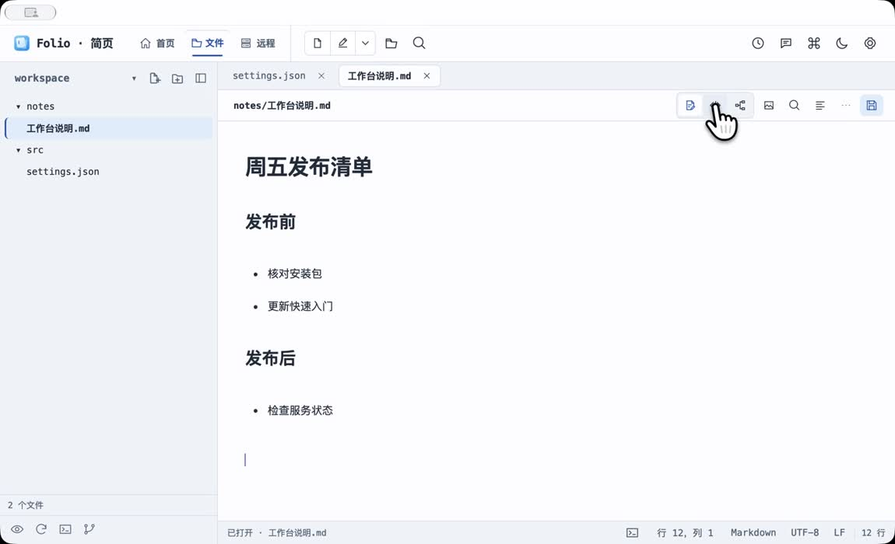

Paste into a draft
A one-line JSON snippet lands in chat and you need to change two values. Paste it into a new draft for syntax highlighting. Click Format to fix the indentation, then edit and save.
Open a project folder and edit your files. Use the Remote tab to run commands over SSH or transfer files with SFTP.


A one-line JSON snippet lands in chat and you need to change two values. Paste it into a new draft for syntax highlighting. Click Format to fix the indentation, then edit and save.
Need to check how a table or checklist looks? Open the Markdown note and see the layout update as you type. Resize images as you work, then export the note as Word, HTML, or PDF.
When a process is hard to describe in words, open Excalidraw from the toolbar or insert a canvas in Markdown. Save the drawing to see it in the note. Use Insert Image to add a screenshot.
Development and test hosts can be easy to mix up. Open Remote and search by name, address, or group. Start SSH or SFTP from the host row.
Something broke on the test server and you need to check its logs. Click Connect to open an SSH terminal tab. Save commands you run every day as scripts.
Need logs from two machines? Open an SFTP tab for each host and transfer files between the server and your local folder.
Edit and save files in your own folder, render Markdown, and draw in Excalidraw. SSH, SFTP, and hosted AI services need a connection.
Workspace SSH private keys, passwords, and trusted host fingerprints are encrypted. When you save model settings to the workspace, the API key is encrypted too. Use the matching passphrase to unlock each set of settings on another computer.
Download sizes for the macOS, Windows, and Linux DEB installers. The portable AppImage is about 109 MB.
Folio uses the system WebView. Formula and diagram rendering load on demand and are released when you close the last Markdown document.
Start editing as soon as you open a folder. Folio indexes its files in the background.
For a quick change to a Word paragraph or an existing ordinary Excel cell, open the DOCX or XLSX in Folio and edit it there. You can also preview images.
Connect a compatible model API to ask questions beside the editor. Review suggested file changes before applying them.
Save local, remote, or dynamic SOCKS forwarding rules. Start, stop, and monitor them in Remote.
Highlight passages, add notes, and click a highlight to revisit it. Export highlights by page or chapter to XMind, then drag the canvas or scroll to zoom.
Search file names or contents. Review external changes or open earlier versions.
Open a shell in the project folder. View Git branches and changes, then stage, commit, pull, or push.
v0.1.5